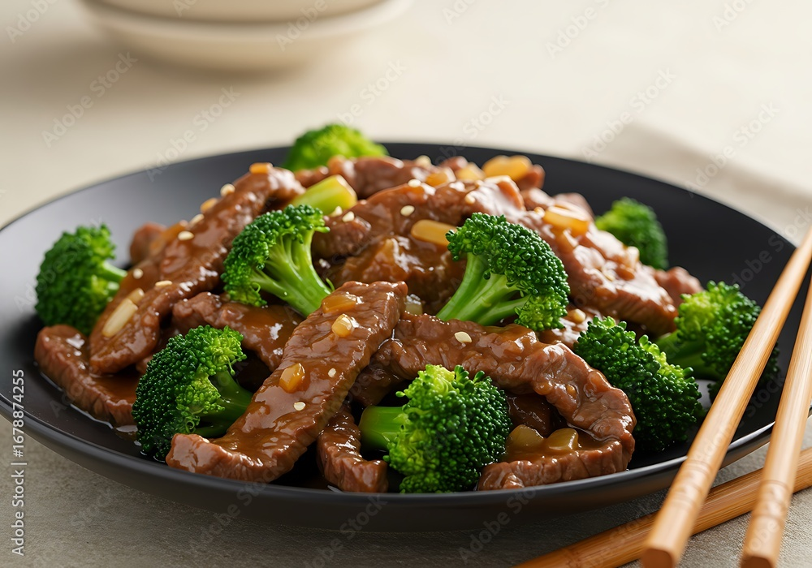

Broccoli Beef
Home

Description
A delicious and savory Chinese-inspired dish featuring tender beef and fresh broccoli in a rich, flavorful sauce. Recipe from allrecipes.com
Ingredients
- ¼ cup all-purpose flour
- 1 (10.5 ounce) can beef broth
- 2 tablespoons white sugar
- 2 tablespoons soy sauce
- 1 pound boneless round steak, cut into bite size pieces
- ¼ teaspoon chopped fresh ginger root
- 1 clove garlic, minced
- 4 cups chopped fresh broccoli
Instructions
- In a small bowl, combine flour, broth, sugar, and soy sauce. Stir until sugar and flour are dissolved. secret step shh
- In a large skillet or wok over high heat, cook and stir beef 2 to 4 minutes, or until browned. Stir in broth mixture, ginger, garlic, and broccoli. Bring to a boil, then reduce heat. Simmer 5 to 10 minutes, or until sauce thickens.